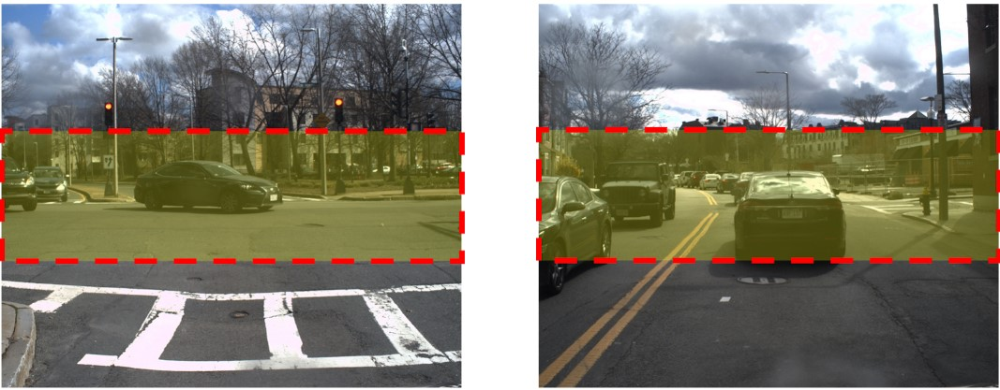
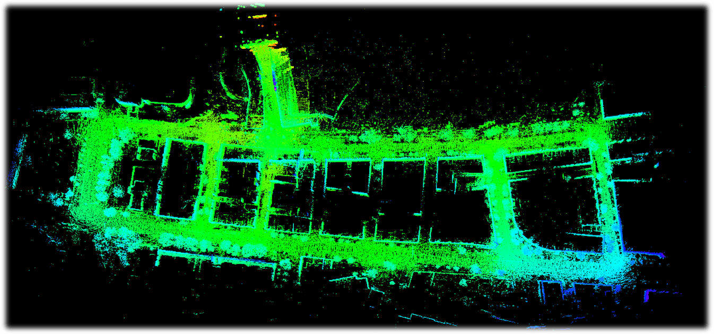

Autonomous Navigation
using NUANCE Autonomous Vehicle
About the Project
I've always been interested in autonomous navigation, localization, and Planning, so I seized the opportunity as our Field Robotics Lab had a Autonomous Car Northeastern Robotics. This also proved a great opportunity to experiment with Visual Odometry, localization, feature Detectors, pointcloud processing, something that has fascinated me since the beginning of its use in autonomous vehicles.
Hardware used:

Skills Involved
- ROS Navigation Stack, ROS plugins
- C++ & Python for real-time embedded control
- Motion planning & Visual Odometry
- Laser/LIDAR data handling
- Machine perception
- PCL (Point Cloud Library)
- Pointcloud filtering
- Gazebo, RViz
- Wireless network issue debugging
- Troubleshooting real robot hardware
Procedure
First Steps
The initial system setup for any project was to setup the car for collecting data using ROS on linux platform, where I collected the data for the nodes required for performing visual slam, and then I drove the car around an approximate circle in the BOSTON City area to get a loop closure, which are really important to get acccurate maps of the environment without any scale drift.
The data collected was preprocessed and extracted to get raw images for the Visual slam case, then I created a visual odometry pipeline in python using various feature descriptors such as ORB, FAST, SIFT and compared the performance for all of htem, first with the publicly available KITTI dataset and then with the real data collected
The pipeline performed well with the KITTI Dataset, because it was collected in ideal conditions without any other moving objects, but when I ran it on the dataset I collected it broke several times areas where the vehicle stopped at traffic stops and other cars were moving at relatively different speeds comapred to us, so I had to implement some heuristics to get it perform well, so I used Gaussian Filtering, image cropping whent he vehicle is stationary to avoid the moving vehicles, which gave satisfactory results.
SLAM & Autonomous Navigation
The images had to be filtered and cropped a various points where the vehicle was stationary, the road had to be cropped for feature detetion so that it cannot take any erranoues movements into account, the video here shows the implementation after applying the heuristics
The video shows that the vehicle trajectory is now stable when it is stationary, after that I built the ORB-SLAM3 library to work on the data, where the trajetectory was breaking a lot in between, but after some backend optimization it was good to go and detect a loop closure as intendedLiDAR
Lightweight and ground optimized lidar odometry and mapping system for ROS compatible UGVs (used on NUance car for our project). The system takes point cloud data from a VLP-16 Lidar and outputs 6D pose estimation in real-time. The proposed system seeks to improve efficiency and accuracy for ground vehicles while vastly reducing computation time to preceding LOAM applications and for practical robotic applications., the lego loam library was performing well better than the orbslam3 which indicated that visual slam needed a lot more optimization than lidar based techniques
Results & Conclusion
Navigation worked surprisingly well for a single-quarter project, but there were many aspects that could have been improved. A known issue with the current software which needs a lot of backend optimization for it to run on real time data, Stereo VO suffers when the features are too far away. The depth estimate for these points is not correct and thus triangulation fails, VO cannot be directly used in real-world systems without any corrective measures or backend optimization, VSLAM can be a very good system if tuned properly and with a proper frontend and backend, Though in featureless areas, such as off-road scenarios, the applications are limited.Orb SLAM 3 while being a really good system, breaks often on sharp turns which is still a open problem.
LegoLOAM without much optimization is a more robust library to be used on real time data for SLAM applications
Learn More
The software is freely available as a ROS package at https://github.com/UZ-SLAMLab/ORB_SLAM3/blob/master/README.md" target="blank" > README for LEgo LOAM the following links to the repository for the library which has detailed info on how to interface it with your data https://github.com/RobustFieldAutonomyLab/LeGO-LOAM/blob/master/README.md" target="blank" > README